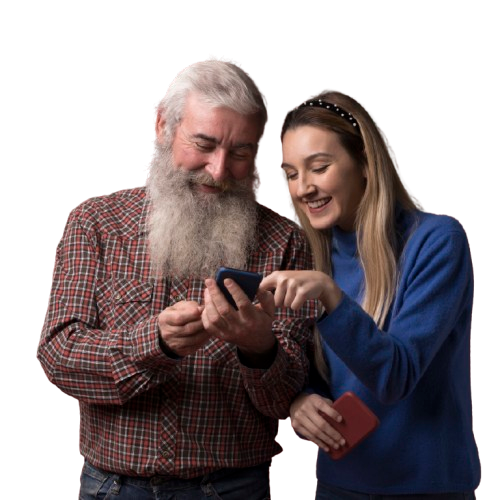

Doe seu tempo, transforme vidas
Seja voluntário e ajude pacientes a acessarem suas teleconsultas com segurança e cuidado.
Quero ser voluntário Necessita de ajuda para acessar suas teleconsultas?
Fale com um de nossos cuidadores!
Necessito de ajuda